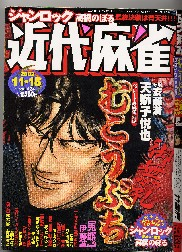
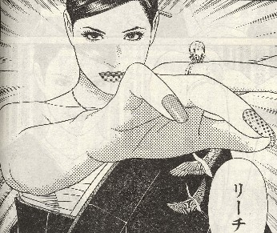
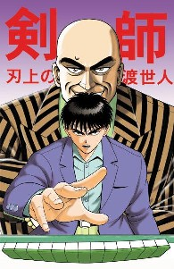
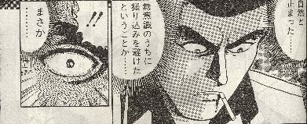
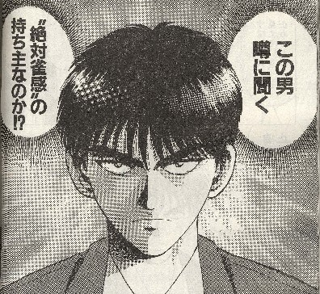

「雀のお宿」といえば麻雀サイトの名門、名作コラム満載の素晴らしいサイトだ。そんな名作コラムの中でも、特にσ（-_-）のお気に入りコラムは、「絶対雀感」。あんまり面白いので、σ（-_-）のサイトでも「絶対雀痴」なるパロディコラムをモノにしたくらい。
この絶対雀感は、もとより絶対音感からの連想であるが、いうなら雀のお宿の管理人である百貫雀の造語。当然ながら麻雀界にこういう表現はなかった。
今日、竹書房から月刊近代麻雀の最新号が郵送されてきた。さっそくお気に入りの打天使とむこうぶちを読む。

ふむふむ、どちらも相変わらず面白い。特に打天使となると、冬子をみているだけで興奮してくるぞ。(^-^；

とまぁ、ヨタはさておいて。そんな人気漫画の中に、剣師という連載漫画がある。

「剣師」は、もともと真剣師の略。ようするにギャンブラーのことだ。σ（-_-）が「ケンシ」という表現を初めて聞いたのは、いまから35年前。聞いた相手は、日本プロ麻雀連盟の小島武夫プロ。といっても、当時はプロではなくてアイウエオのフロアー主任。
「あのね、麻雀ではイカサマ師のことを“ケンシ”っていうんだよ」
「ケンシ？、なにそれ？」っていう感じ。
「真剣師の略」だとは聞かなかったから、変な表現だなと思っただけで、なにかピンと来なかった。それから十年くらいしてから、将棋の本を読んでいるときナゾが解けた。
それは明治時代の賭け将棋の小説だった。そのなかで、賭け将棋専門の将棋指しを真剣師と表現してあった。そのとき、（なるほ、ケンシとは真剣師のこと。略して剣師と云うんだな）と気がついた。
もちろん将棋の場合は賭け将棋師のことであって、イカサマ将棋師の意味ではない。しかし麻雀では賭けは当たり前。賭け麻雀プレーヤーが真剣師なら、麻雀プレーヤーのほとんどが真剣師ということになる。（^-^；
そこで麻雀では、特にイカサマ師のことを真剣師、略して剣師（けんし）と呼んだわけだ。
そんな思いでのある表現がタイトルになっているから、このマンガになんとなく興味があった。そこで今日も読んでいると、（あらっ）というシーンに出くわした。なんと、主人公の周防は絶対雀感の持ち主だったのだ！。いやぁ、それは知らなかった。


主人公が本当に絶対雀感の持ち主なのかは今後の展開に待つしかない。しかしいままでインターネットの世界の中だけでの存在であった絶対雀感という表現が、ついに紙メディアでも使われだした事だけはたしかだ。いや、めでたいめでたい(^-^；
とはいうものの今回のマンガは、動物的感覚で危険牌を察知できた＝絶対雀感、と言う感じになっている。もし“絶対雀感”をそれに限った能力としてしまうと、百貫雀さん云うところの“絶対雀感”とはちとニュアンスが違ってしまうような気もするが、とりあえず、ま、いっか。
|